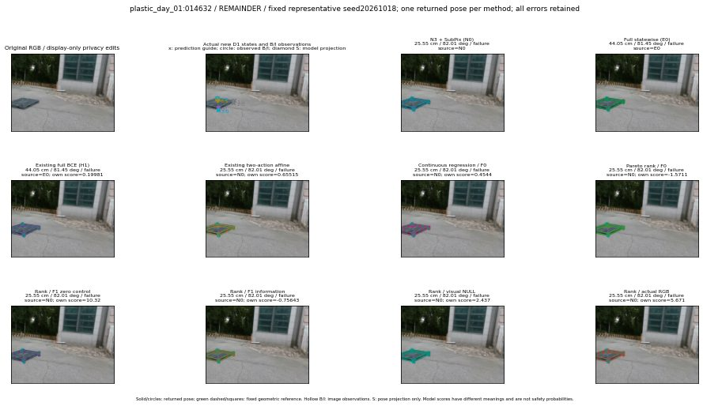

실선은 반환 자세, 초록 점선은 고정 기하 참조입니다. S는 영상 관측이 아닙니다. 점수는 모델별 의미가 다르며 보정된 안전 확률이 아닙니다. 개인정보 처리는 표시 사본에만 적용했습니다.
| 방법·seed | 위치 / 회전 / 공동성공 | 실제 출처 | 선택 후보 | 각 모델 자체 점수 |
|---|---|---|---|---|
| N0 | 25.55 cm / 82.01 deg / failure | N0 | N/A | N/A |
| E0 | 44.05 cm / 81.45 deg / failure | E0 | N/A | N/A |
| E0_REGENERATED | 44.05 cm / 81.45 deg / failure | E0 | E0_REGENERATED | N/A |
| POSEFIX_SUBPIX_PF_ANCHOR | 27.43 cm / 81.96 deg / failure | OTHER | N/A | N/A |
| POSEFIX_SUBPIX_YOLO_ANCHOR | 27.43 cm / 81.96 deg / failure | OTHER | N/A | N/A |
| D1_H1_MLP_s20261018 | 44.05 cm / 81.45 deg / failure | E0 | E0_REGENERATED | 0.19981186091899872 |
| D1_H1_MLP_s20261019 | 44.05 cm / 81.45 deg / failure | OTHER | G10/ORIGINAL_WD/endpoint/3 | -0.26256611943244934 |
| D1_H1_MLP_s20261020 | 44.05 cm / 81.45 deg / failure | E0 | E0_REGENERATED | 0.9842890501022339 |
| D1_H1_PAIR_MLP_s20261018 | 25.55 cm / 82.01 deg / failure | N0 | N0 | 0.22123593091964722 |
| D1_H1_PAIR_MLP_s20261019 | 25.55 cm / 82.01 deg / failure | N0 | N0 | 0.5718345642089844 |
| D1_H1_PAIR_MLP_s20261020 | 25.55 cm / 82.01 deg / failure | N0 | N0 | 1.304630160331726 |
| D1_H1_PAIR_ROLE_AFFINE_s20261018 | 25.55 cm / 82.01 deg / failure | N0 | N0 | 0.6551534533500671 |
| D1_H1_PAIR_ROLE_AFFINE_s20261019 | 25.55 cm / 82.01 deg / failure | N0 | N0 | 0.6567805409431458 |
| D1_H1_PAIR_ROLE_AFFINE_s20261020 | 25.55 cm / 82.01 deg / failure | N0 | N0 | 0.5543936491012573 |
| R_CONT_F0_s20261018 | 25.55 cm / 82.01 deg / failure | N0 | N0 | 0.4544019103050232 |
| R_CONT_F0_s20261019 | 25.55 cm / 82.01 deg / failure | N0 | N0 | 0.529819905757904 |
| R_CONT_F0_s20261020 | 25.55 cm / 82.01 deg / failure | N0 | N0 | 0.42370420694351196 |
| R_ORDER_F0_s20261018 | 25.55 cm / 82.01 deg / failure | N0 | N0 | -1.5710804462432861 |
| R_ORDER_F0_s20261019 | 25.55 cm / 82.01 deg / failure | N0 | N0 | 1.705142855644226 |
| R_ORDER_F0_s20261020 | 25.55 cm / 82.01 deg / failure | N0 | N0 | 0.5451450347900391 |
| R_ORDER_F1_ZERO_s20261018 | 25.55 cm / 82.01 deg / failure | N0 | N0 | 10.319634437561035 |
| R_ORDER_F1_ZERO_s20261019 | 25.55 cm / 82.01 deg / failure | N0 | N0 | 0.823948860168457 |
| R_ORDER_F1_ZERO_s20261020 | 25.55 cm / 82.01 deg / failure | N0 | N0 | 6.720621109008789 |
| R_ORDER_F1_s20261018 | 25.55 cm / 82.01 deg / failure | N0 | N0 | -0.756434977054596 |
| R_ORDER_F1_s20261019 | 25.55 cm / 82.01 deg / failure | N0 | N0 | 4.973728179931641 |
| R_ORDER_F1_s20261020 | 25.55 cm / 82.01 deg / failure | N0 | N0 | 6.921482086181641 |
| V_ORDER_NULL_s20261018 | 25.55 cm / 82.01 deg / failure | N0 | N0 | 2.436978816986084 |
| V_ORDER_NULL_s20261019 | 25.55 cm / 82.01 deg / failure | N0 | N0 | 2.428037405014038 |
| V_ORDER_NULL_s20261020 | 25.55 cm / 82.01 deg / failure | N0 | N0 | 5.485771179199219 |
| V_ORDER_RGB_s20261018 | 25.55 cm / 82.01 deg / failure | N0 | N0 | 5.670997619628906 |
| V_ORDER_RGB_s20261019 | 25.55 cm / 82.01 deg / failure | N0 | N0 | 2.830676794052124 |
| V_ORDER_RGB_s20261020 | 25.55 cm / 82.01 deg / failure | N0 | N0 | -4.336066722869873 |